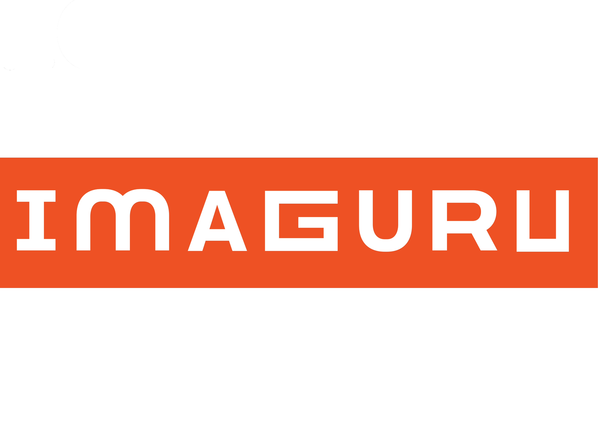

Imaguru Hackathon on Train
"Minsk - Riga"
August 30 - September 1, 2018
HACKTRAIN

ABOUT
For the first time in Belarus. Starting at Imaguru on August 30th, continuing on a
train in Riga, finishing after our arrival in Riga and ending at.
The now legendary Hackatrain attracts developers, designers and entrepreneurs from
all over the world, all hoping to strike it big, hackathon-style.
This isn’t your typical hackathon. Say goodbye to boring venues and hello to
travelling around with more than 50 fellow hackers competing across mobility
challenges. Are you ready for Hackathon on Train Minsk-Riga?
AGENDA
- Aug 30
- 17:00 - 17:30 Registration
- 18:00 - 18:30 Opening Ceremony
- 18:30 - 20:00 Pitching in Minsk / Hackathon Starts
- Aug 31
- 09:00 - 11:00 Breakfast / Check-point
- 11:00 Mentoring Session
- 13:00 - 14:00 Lunch
- 14:00 Mentoring Session
- 18:00 Dinner / Departure for train
- 20:15 Train departures
- 20:15 …Hacking
- Sept 1
- 08:00 Train Arrives to Riga
- 09:00 - 11:00 Breakfast / Check-point
- 11:00 Mentoring Session
- 13:00 - 14:00 Lunch
- 14:00 - 18:00 Final Preparation
- 18:00 - 19:30 Final Stage
- 19:30 - 21:00 Award Ceremony. Party
MENTORS
GALLERY
FAQ
How do I get my train ticket?
The check-in for participants will be organized at Restaurant 1e Klas, located at
platform 2B, Amsterdam Central Station.
From where is the Hackatrain departing?
The check-in for participants will be organized at Restaurant 1e Klas, located at
platform 2B, Amsterdam Central Station.
What time is the Hackatrain departing?
The check-in for participants will be organized at Restaurant 1e Klas, located at
platform 2B, Amsterdam Central Station.
What about the return trip?
The check-in for participants will be organized at Restaurant 1e Klas, located at
platform 2B, Amsterdam Central Station.